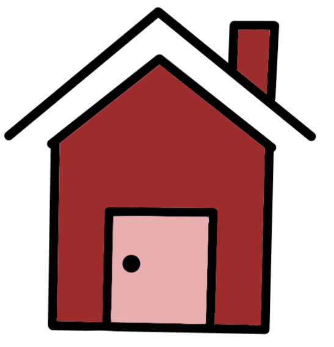

吳文心
許景甯
蔡皓羽
邱韻玟
工作內容：網站多媒體程式編寫、版面設計
心得：這次做這個網頁真的花了很多時間，一開始對於許多語法都還不熟悉，所以進度很慢，常常做到一半就要再回去看老師上課的投影片，但到後來就越來越熟練，還會使用許多特效，甚至還畫了許多圖放上網頁，最後成功做出來真的很有成就感。
工作內容：影片構思、拍攝、剪接、網站文案
心得：藉由行銷中原大學來架設網站，從擬定行銷方向到完工需要所有組員的共同努力。網站的架構、影片的拍攝及剪輯，思考行銷文案等。在分工後，依然需要經過大家的溝通與互相配合，最後才能擁有美好的成果。
工作內容：影片構思、拍攝、剪接、網站文案
心得：很開心有機會做出一個屬於我們的網頁，對我來說這次專案是一大突破，在短時間內設計出網頁及剪輯出影片，過程中我主要是負責影片剪輯的部分。正片內容設計屬於行銷樂學園，希望透過我們的影片能吸引大家多善加利用學校中的資源。

工作內容：網站多媒體程式編寫、版面設計
心得：藉由這次的期中專案，不僅僅學到了程式設計上的技巧，更學習到了團隊合作的精神，如果這次的專案是自己一個人，我想，應該不會那麼輕易的就可以完成，還有很多需要學習的，希望之後還有這種機會能夠讓我做中學。